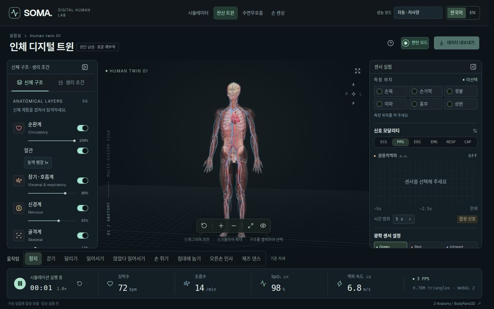
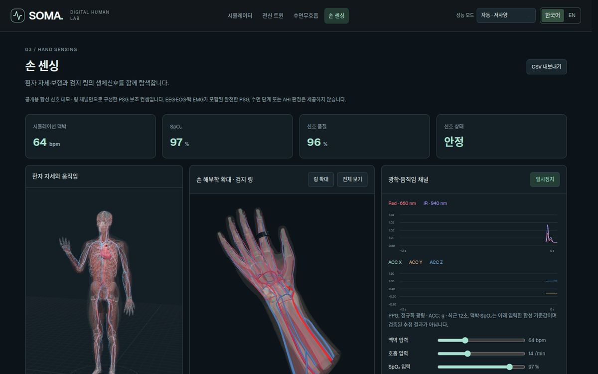

Biosensing · Digital Twin
Public demo · Research use
SOMA
A biosensing digital twin for wearable-sensor development. Place virtual sensors on a full-body anatomical model, vary physiological conditions and review the synthetic signals — so design decisions are made before any hardware is built.
- Full-body twin — 6 body systems, 3D tissue sections at 12 skin sites
- ECG · PPG · EEG · EMG · respiration synthesis, with CSV export
- Sleep apnea — respiration from a sternal patch, across postures and movement
- Wrist sensing — capacitive arrays over the radial artery, pulse transit (PTT/PWV) research